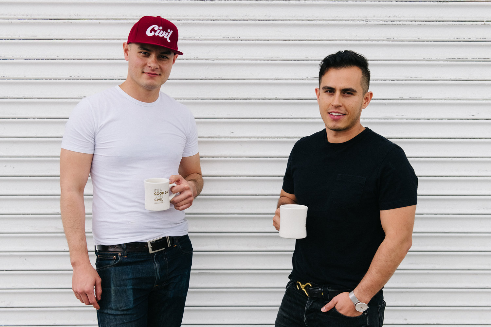

Where eagles dare.

OUR STORY
Civil Coffee was founded in 2011 on a dream of providing guests with a wonderful coffee experience without the usual context.
It was established by Alan and Alex Morales as an espresso pop up catering experience servicing the Los Angeles area. Under the banner of Civil Coffee, the home grown Angeleno brother duo served liquid gold in all sorts of events and festivities, from intimate weddings to full on festivals like Coachella. Through the years, the goal was to eventually open a brick and mortar where the ideas of Civil could be materialized.